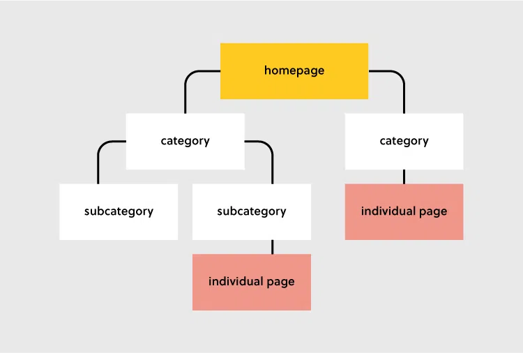
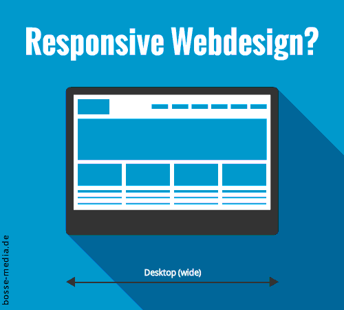
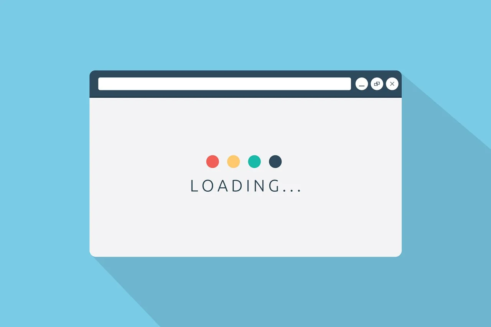

| Characteristic | Summary | Quick Find |
|---|---|---|
| Content | The text, imagery or audio seen on a website... | Jump to Content |
| Visual Hierarchy | Said to be the most important characteristic, places elements in order of importance... | Jump to Visual Hierarchy |
| Organization | The manner in which information is laid out to the users... | Jump to Organization |
| Responsiveness | How webpages should behave according to user's screen size and orientation... | Jump to Responsiveness |
| Time for Loading | Time taken for the display of a webpage... | Jump to Time for Loading |
The quote “content is king” by Bill Gates stands true in web design. Effective content requires proper research into the website’s main audience and its purpose. It then requires careful selection of different media (such as videos and graphics) as well as the manner in which they will appear to visitors (Resource Techniques, 2019). Content must be high-calibre, pertinent and appealing.
Due to the usually high volume of information presented on websites, content needs to be organized and prioritized in a way that will help users locate what they need quickly while improving Search Engine Optimization (SEO). Experts conclude that a website’s content is highly essential for its ranking in search engines (Textbroker, 2021).
The positioning of elements in order of priority is another characteristic of effective web design. According to Marianne (2021), visual hierarchy may be achieved through visual contrast: size, colour, typography, whitespace and style. This feature is relevant as it establishes a main point for visitors to find the information they need the most. Balance is the key.
Duckett (2011, pp. 467–468) outlines some of these features in their book:
This characteristic speaks to grouping related pieces of information together to make the website appear simpler and easy to understand. Similar visual styles can also be organized such that visitors are familiarized with a particular type of content (Duckett, 2011, p. 465).
Marianne (2021) outlines two notable methods of organization:
Organization also enhances navigation and 'dwell time' as visitors will not remain on a website that is confusing and unorganized.
Engaging the audience is important in making a website stand out and ultimately successful. An interactive and responsive website will accomplish this through different methods:
The aim is to hold the audience’s attention and get them to remain on the website. This is a simple yet highly powerful characteristic of effective website design.
The fifth and final point for effective web design is the load time. Website load time refers to the time it takes for the content (imagery, text and videos) of the website to completely load and show to the user (Baker, 2022). It appears that “nearly 70% of consumers admit that page speed impacts their willingness to buy from an online retailer. (Unbounce, 2019)” (Baker, 2022, “11 Page Load Time Statistics” section, para. 4). The first 3 seconds of a website’s load time are crucial as this time determines whether or not web visitors will remain on the page (Marianne, 2021).
The attribute of load time impacts conversion rates and overall user experience. It is essential that developers and designers know these five effective characteristics and apply them to every website they create to improve their skills and satisfy visitors. Jump To Top
